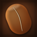
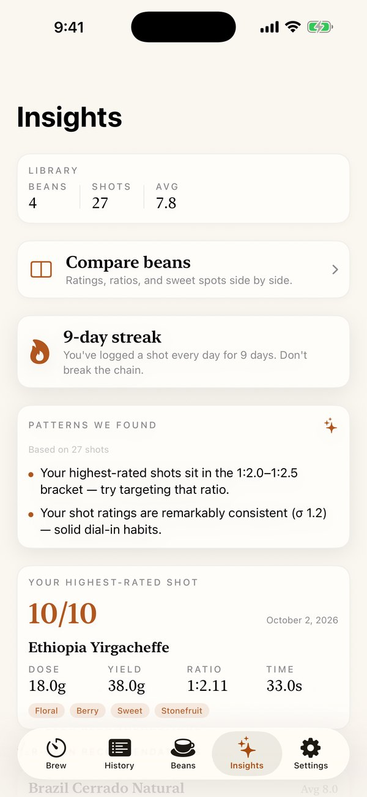
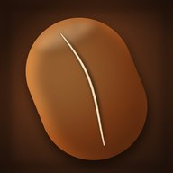
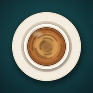
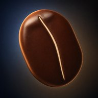
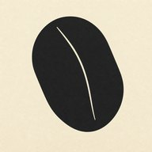
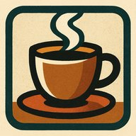
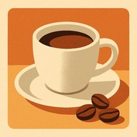

A starting point for every new bag
Open a new bag and Crema suggests the first dose, ratio, time and grind from your best shots on the same coffee, the same roaster, or the same roast.
- Dose
- 18.0 g
- Ratio
- 1:2.0
- Time
- 32 s
- Grind
- 16

Crema Get CremaCrema is an espresso journal that tells you what to try next. Pull a shot, say how it tasted, and get one clear change for the next one.
Free, every feature. No account.
A big dial with haptic checkpoints, and the shot on your Lock Screen and Dynamic Island. Minimize it to a bar and keep using the app.
Enter the yield when you stop, then place it between sour and bitter and give it a score. Or leave it unrated, and it stays out of your averages.
The coach weighs how it tasted, how it ran, your basket and your best shot so far, and names the number on your grinder. It runs on your device.
6/10 Bright, a little thin
Next shot
Grind finer, to about 1615
Sour and fast: 22 seconds against a 30-second target. A finer grind slows the flow and pulls more sweetness.
Each bag's shots become a path. You can see which change helped, and Crema tells you when you've beaten your best.
Best shot of this bag, found on shot 3.
Open a new bag and Crema suggests the first dose, ratio, time and grind from your best shots on the same coffee, the same roaster, or the same roast.
Tell Crema which way finer turns on each grinder, and the coach names the next number based on how that grinder has actually responded. It won't overshoot from sour to bitter, and it drops advice that hasn't worked twice.
Beyond grind, it can suggest ratio, pre-infusion, dose for your basket, puck prep or temperature. Every claim says how many shots it's based on.
On a foldable iPhone, Crema uses both halves. Pick a bag on one side and see its dial-in path, starting recipe and next step on the other.
Drag a shot across the fold to compare it with your latest. The brew timer sits beside a step-by-step guide, and nothing ever sits on the crease.
Run the timer on Apple Watch with haptics that keep counting while your wrist is down. Set the yield with the Digital Crown, rate the shot, and it lands in your iPhone log.
A Live Activity follows the shot. Pin any open bean to the Brew widget or let it follow your hopper, and start a shot from Control Center.
Log a shot in one sentence, repeat a recipe, or ask for the next step.

The Brew tab shows your last seven days and your streak. Insights recaps the week against the one before, and each bean page tells you how the bag went.
Insights also find the rest window when each roaster tastes best, what every shot costs, and where your grind settles when the rating climbs. Compare any two beans side by side.

Espresso
Crema
Midnight
Mono
Bold Brew
SunriseYour log syncs through your own private iCloud, or stays on your device. There are no servers, no analytics and no sign-in. Every feature is free, and an optional tip jar keeps Crema independent.
iPhone, foldable iPhone, iPad, Apple Watch and Apple silicon Mac. In 11 languages.
Download on theApp Store